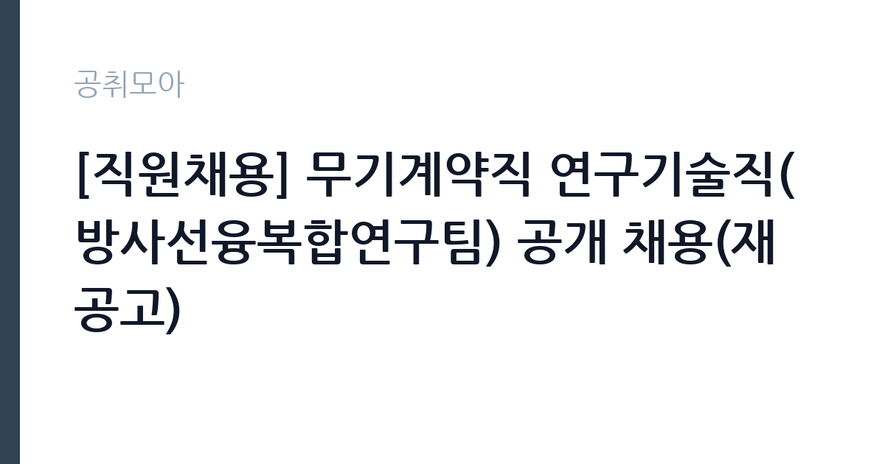

[공공기관] [직원채용] 무기계약직 연구기술직(방사선융복합연구팀) 공개 채용(재공고)
동남권원자력의학원 · 부산 · 마감 2026-10-27 (D-14) · 출처 잡알리오

한눈에 보는 모집 조건
| 기관 | 동남권원자력의학원 |
|---|---|
| 공고명 | [직원채용] 무기계약직 연구기술직(방사선융복합연구팀) 공개 채용(재공고) |
| 고용형태 | 공무직 |
| 근무지 | 부산 |
| 게시일 | 2026-10-14 |
| 마감일 | 2026-10-27 (D-14) |
지원자격, 이렇게 읽으세요
- 공공기관 채용공시
- 세부 조건은 원문 공고문 확인
필수 자격은 석사학위 소지자 또는 동등 자격 인정자이며, 물리학·방사선학·원자력공학 등 관련 학과 졸업자여야 합니다. 공인영어성적 기준 점수 이상을 보유해야 하므로, 인정 시험 종류와 점수표는 원문에서 대조하시기 바랍니다. 2026년 12월 31일 기준 의학원 정년인 만 60세에 도달하지 않아야 합니다. 우대는 관련 분야 박사학위 소지자, 방사선·방사능 분야 KOLAS 공인기관 실무경험자, 최근 3년 SCI(E) 논문 주저자 또는 교신저자 포함 2편 이상 보유자입니다. 블라인드 채용 가이드라인을 따르므로 출신학교 등이 드러나는 기재에 유의하시기 바랍니다.
이 공고의 포인트
첫 번째 포인트는 무기계약직이라는 고용 형태입니다. 기간 만료로 고용관계가 끝나는 기간제와 달리 정년까지 근무가 이어지는 구조라 연구직으로서 안정성이 큽니다. 두 번째로 EPR 분광과 하전입자 선량평가는 방사선 의학·안전 분야에서 수요가 꾸준한 희소 전문 영역이며, KOLAS 공인기관 실무자 경력은 다른 기관 이직 시에도 강점이 됩니다. 세 번째로 재공고라는 점입니다. 전회차에서 적격자를 채우지 못했을 가능성이 있어, 요건을 갖춘 지원자에게는 오히려 기회가 될 수 있습니다.
전형은 어떻게 진행되나
전형은 서류전형과 면접전형으로 진행되는 것이 일반적이며, 세부 일정과 배점은 의학원 채용 홈페이지(diramsjob.recruiter.co.kr)의 원문에서 확인하시기 바랍니다. 서류에서는 석사 학위와 전공 적합성, 영어성적 기준 충족 여부가 먼저 심사됩니다. 면접에서는 EPR·하전입자 분야의 연구 이해도와 KOLAS 실무 경험을 중심으로 검증할 가능성이 높으므로, 본인의 논문과 실험 경력을 직무와 연결해 정리해 두시기 바랍니다.
원문에서 확인한 전형 방식
과학기술정보통신부 산하 정부 출연연구기관인 동남권원자력의학원에서 21세기 암치료의 새빛을 열어갈 인재를 찾습니다. 우리 기관은 정부의 블라인드 채용 가이드라인에 따라 응시절차 및 방법을 준수하고 있습니다. 따라서 응시자는 모집 공고문과 블라인드 채용 유의사항을 잘 숙지하여 불이익이 발생하지 않도록 주의 바랍니다. 1. 모집부문 : 무기계약직 연구기술직(방사선융복합연구팀) 2. 모집인원: 2명 [담당업무_EPR] ㆍ전자상자성공명분광(EPR) 방사선량평가 연구 ㆍKOLAS 공인기관 실무자 [담당업무_하전입자] ㆍ하전입자 방사선 선량 평가 연구 ㆍKOLAS 공인기관 실무자 [필수사항] ㆍ석사학위 소지자 또는 이와 동등 이상의 자격이 있다고 인정되는 자 ㆍ해당 공인영어성적 기준 점수 이상 소지자(영어능력시험 기준 점수표 참고) ㆍ물리학, 방사선학, 원자력공학 등 관련학과 졸업자 ㆍ2026.12.31. 기준 의학원 정년(만 60세)에 도달하지 않는 자 [우대사항] ㆍ관련 분야 박사학위 소지자 ㆍKOLAS 공인기관 실무경험자(방사선, 방사능 분야) ㆍ최근 3년간 SCI(E) 논문 주저자 혹은 교신저자 포함 2편
이런 분께 추천해요
- 물리·방사선·원자력 분야 석사 학위를 보유한 연구직 취업준비생
- KOLAS 공인기관 실무 경험이 있어 방사선량평가 경력을 이어가고 싶은 전문가
- 정년까지 안정적으로 연구 업무에 전념하고 싶은 비수도권 거주 구직자
지원 전 체크리스트
- 석사 학위와 관련 학과 졸업 요건 충족 여부 확인
- 공인영어성적의 인정 시험 종류·기준 점수·유효기간 대조
- 2026년 12월 31일 기준 정년(만 60세) 미도달 여부 확인
- 블라인드 채용 유의사항에 맞는 입사지원서 작성 여부 점검
모집 일정과 제출 타이밍
접수는 2026년 10월 14일 게시 이후 10월 27일에 마감됩니다. 이후 서류전형 합격자 발표와 면접전형, 임용 순으로 이어지며, 확정 일정은 의학원 채용 홈페이지의 원문에서 확인하시기 바랍니다. 영어성적과 학위증명 등 제출 서류의 발급에 시일이 걸릴 수 있으니, 마감 며칠 전에는 접수를 마치는 것을 권합니다.
직무 이해하기: 공공기관
방사선융복합연구팀의 연구기술직은 방사선량평가 연구와 KOLAS 공인기관 실무를 담당합니다. EPR(전자상자성공명분광) 분야는 물질에 흡수된 방사선량을 정밀 측정하는 연구를 수행하며, 하전입자 분야는 양성자·중이온 등 입자방사선의 선량 분포를 평가합니다. KOLAS 공인기관 실무자로서 시험 성적서의 신뢰성을 책임지는 품질관리 업무도 병행합니다. 연구 결과는 암 치료용 방사선 기술과 방사선 안전 평가에 활용됩니다.
자기소개서 작성 팁
입사지원서에서는 석사 과정의 연구 주제와 방사선량평가 직무의 연결고리를 구체적으로 서술하시기 바랍니다. EPR 실험이나 선량 측정 장비를 다룬 경험을 수치와 함께 제시하면 직무 적합성을 보여줄 수 있습니다. SCI(E) 논문이 있다면 본인의 기여도를 명확히 구분해서 쓰시기 바랍니다. KOLAS 실무경험자는 숙련도 시험이나 내부심사에 참여한 사례를 중심으로 기술하시는 것이 좋습니다.
면접 준비 포인트
면접에서는 방사선량평가의 기본 원리와 본인 연구의 차별성을 묻는 질문이 중심이 될 가능성이 높습니다. EPR 분광의 측정 원리를 비전공자도 이해할 정도로 설명하는 연습을 해두시기 바랍니다. KOLAS 공인기관의 품질시스템(측정소급성, 불확도 평가 등)에 대한 이해를 보여주시면 실무자 자질로 평가받을 수 있습니다. 재공고라는 점을 의식해 장기 근속 의지와 부산 근무 포부를 분명히 밝히시기 바랍니다.
급여·근무조건 읽는 법
보수는 원문 공고의 보수표에서 확인하시기 바랍니다. 참고로 동일 기관의 무기계약직 일반업무직 채용 안내(사람인·캐치 게시 기준)에는 연봉 2,673만원(주 40시간 기준)으로 안내된 바 있으나, 본 연구기술직 공고는 석사 이상을 요구하는 별개 모집이므로 확정 수치는 원문에서 확인하시기 바랍니다. 기본급과 각종 수당·상여의 구성, 무기계약직 전환 조건과 호봉 체계는 의학원 보수 규정과 원문 공고를 대조하시기 바랍니다.
자주 묻는 질문
- 재공고는 무엇을 의미하나요?
전회차 모집에서 최종 합격자를 선발하지 못했거나 결원이 남아 다시 공고하는 것입니다. 지원 요건이 완화된 경우도 있으니 전회차 공고와 달라진 점을 원문에서 비교해 보시기 바랍니다. - KOLAS 경험이 없으면 지원할 수 없나요?
KOLAS 실무경험은 우대사항이며 필수사항이 아닙니다. 필수사항은 석사 학위와 관련 학과, 영어성적 기준 충족이므로 요건을 갖춘 분은 지원하실 수 있습니다. - 무기계약직과 정규직의 차이는 무엇인가요?
무기계약직은 계약기간의 정함이 없어 정년까지 근무가 이어지는 형태로, 고용 안정성 측면에서는 정규직과 유사합니다. 다만 직군별 처우와 승진 체계는 기관 규정에 따르므로 원문과 단체협약 등을 확인하시기 바랍니다.
함께 보면 좋은 공고
[공공기관] 단시간제(편의시설 점원) 채용공고 — 마감 2026-10-20[공공기관] [김해보훈요양원] 2026년 6차 요양보호직 채용공고 — 마감 2026-10-28[공공기관] 한전KPS(주) 서울경기전력지사 수원지점 단기노무원(부지정리) 모집 — 마감 2026-10-19출처: 잡알리오 공개정보를 바탕으로 공취모아가 정리한 안내글입니다. 모집 조건·일정은 변경될 수 있으니 지원 전 반드시 원문 공고문을 확인하세요. 본 글은 정보 제공용이며 합격을 보장하지 않습니다.